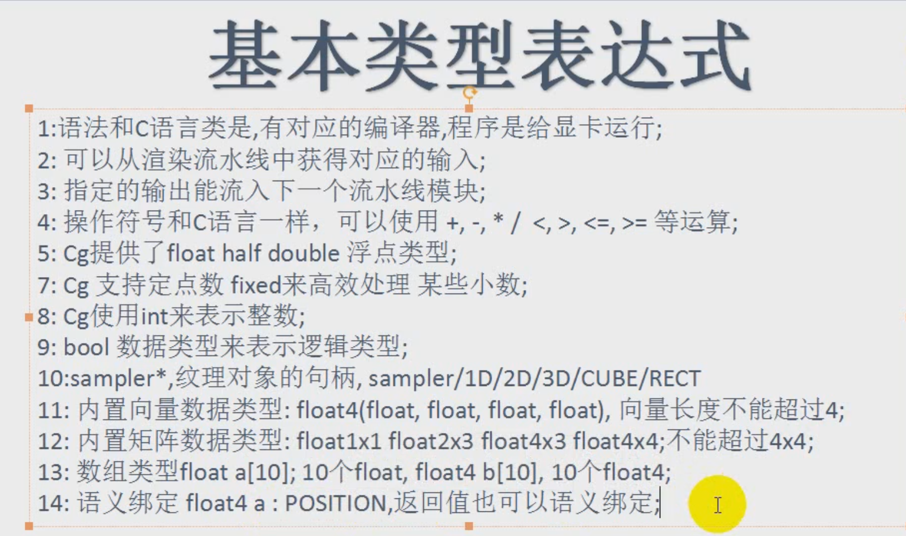

The Cg Tutorial
The Cg Tutorial is now available, right here, online. You can purchase a beautifully printed version of this book, and others in the series, at a 30% discount courtesy of InformIT and Addison-Wesley.
Please visit our Recent Documents page to see all the latest whitepapers and conference presentations that can help you with your projects.
Appendix E. Cg Standard Library Functions
Cg provides a set of built-in functions and predefined structures with binding semantics to simplify GPU programming. These functions are similar in spirit to the C standard library, offering a convenient set of common functions. In many cases, the functions map to a single native GPU instruction, so they are executed very quickly. Of the functions that map to multiple native GPU instructions, you may expect the most useful to become more efficient in the near future.
Although you can write your own versions of specific functions for performance or precision reasons, it is generally wiser to use the Cg Standard Library functions when possible. The Standard Library functions will continue to be optimized for future GPUs; a program written today using these functions will automatically be optimized for the latest architectures at compile time. Additionally, the Standard Library provides a convenient unified interface for both vertex and fragment programs.
This appendix describes the contents of the Cg Standard Library, and is divided into the following five sections:
- "Mathematical Functions"
- "Geometric Functions"
- "Texture Map Functions"
- "Derivative Functions"
- "Debugging Function"
Where appropriate, functions are overloaded to support scalar and vector variants when the input and output types are the same.
E.1 Mathematical Functions
Table E-1 lists the mathematical functions that the Cg Standard Library provides. The table includes functions useful for trigonometry, exponentiation, rounding, and vector and matrix manipulations, among others. All functions work on scalars and vectors of all sizes, except where noted.
Table E-1. Mathematical Functions
Function | Description |
abs( x ) | Absolute value of x . |
acos( x ) | Arccosine of x in range [0, p], x in [–1, 1]. |
all( x ) | Returns true if every component of x is not equal to 0. Returns false otherwise. |
any( x ) | Returns true if any component of x is not equal to 0. Returns false otherwise. |
asin( x ) | Arcsine of x in range [–p/2, p/2]; x should be in [–1, 1]. |
atan( x ) | Arctangent of x in range [–p/2, p/2]. |
atan2( y , x ) | Arctangent of y / x in range [–p, p]. |
ceil( x ) | Smallest integer not less than x . |
clamp( x , a , b ) | x clamped to the range [ a , b ] as follows:
|
cos( x ) | Cosine of x . |
cosh( x ) | Hyperbolic cosine of x . |
cross( A , B ) | Cross product of vectors A and B ; A and B must be three-component vectors. |
degrees( x ) | Radian-to-degree conversion. |
determinant( M ) | Determinant of matrix M . |
dot( A , B ) | Dot product of vectors A and B . |
exp( x ) | Exponential function e x . |
exp2( x ) | Exponential function 2 x . |
floor( x ) | Largest integer not greater than x . |
fmod( x , y ) | Remainder of x / y , with the same sign as x . If y is 0, the result is implementation-defined. |
frac( x ) | Fractional part of x . |
frexp( x , out exp ) | Splits x into a normalized fraction in the interval [½, 1), which is returned, and a power of 2, which is stored in exp . If x is 0, both parts of the result are 0. |
isfinite( x ) | Returns true if x is finite. |
isinf( x ) | Returns true if x is infinite. |
isnan( x ) | Returns true if x is NaN (Not a Number). |
ldexp( x , n ) | x x 2 n . |
lerp( a , b , f ) | Linear interpolation: (1 – f )* a + b * f where a and b are matching vector or scalar types. f can be either a scalar or a vector of the same type as a and b . |
lit( NdotL , NdotH , m ) | Computes lighting coefficients for ambient, diffuse, and specular light contributions. Expects the NdotL parameter to contain N • L and the NdotH parameter to contain N • H . Returns a four-component vector as follows:
There is no vectorized version of this function. |
log( x ) | Natural logarithm ln( x ) ; x must be greater than 0. |
log2( x ) | Base 2 logarithm of x ; x must be greater than 0. |
log10( x ) | Base 10 logarithm of x ; x must be greater than 0. |
max( a , b ) | Maximum of a and b . |
min( a , b ) | Minimum of a and b . |
modf( x , out ip ) | Splits x into integral and fractional parts, each with the same sign as x . Stores the integral part in ip and returns the fractional part. |
mul( M , N ) | Matrix product of matrix M and matrix N , as shown below:  If M has size A x B , and N has size B x C , returns a matrix of size A x C . |
mul( M , v ) | Product of matrix M and column vector v , as shown below:  If M is an A x B matrix and v is a B x 1 vector, returns an A x 1 vector. |
mul( v , M ) | Product of row vector v and matrix M , as shown below:  If v is a 1 x A vector and M is an A x B matrix, returns a 1 x B vector. |
noise( x ) | Either a one-, two-, or three-dimensional noise function, depending on the type of its argument. The returned value is between 0 and 1, and is always the same for a given input value. |
pow( x , y ) | xy . |
radians( x ) | Degree-to-radian conversion. |
round( x ) | Closest integer to x . |
rsqrt( x ) | Reciprocal square root of x ; x must be greater than 0. |
saturate( x ) | Clamps x to the [0, 1] range. |
sign( x ) | 1 if x > 0; –1 if x < 0; 0 otherwise. |
sin( x ) | Sine of x . |
sincos(float x , out s , out c ) | s is set to the sine of x , and c is set to the cosine of x . If both sin( x ) and cos( x ) are needed, this function is more efficient than calculating each individually. |
sinh( x ) | Hyperbolic sine of x . |
smoothstep( min , max , x ) | For values of x between min and max , returns a smoothly varying value that ranges from 0 at x = min to 1 at x = max . x is clamped to the range [ min , max ] and then the interpolation formula is evaluated: –2*(( x – min )/( max – min ))3 + 3*(( x – min )/( max – min ))2 |
step( a , x ) | 0 if x < a ; 1 if x >= a . |
sqrt( x ) | Square root of x ; x must be greater than 0. |
tan( x ) | Tangent of x . |
tanh( x ) | Hyperbolic tangent of x . |
transpose( M ) | Matrix transpose of matrix M . If M is an A x B matrix, the transpose of M is a B x A matrix whose first column is the first row of M , whose second column is the second row of M , whose third column is the third row of M , and so on. |
E.2 Geometric Functions
Table E-2 presents the geometric functions that are provided in the Cg Standard Library.
Table E-2. Geometric Functions
Function | Description |
distance( pt1 , pt2 ) | Euclidean distance between points pt1 and pt2 . |
faceforward( N , I , Ng ) | N if dot( Ng , I ) < 0; - N otherwise. |
length( v ) | Euclidean length of a vector. |
normalize( v ) | Returns a vector of length 1 that points in the same direction as vector v . |
reflect( I , N ) | Computes reflection vector from entering ray direction I and surface normal N . Valid only for three-component vectors. |
refract( I , N , eta ) | Given entering ray direction I , surface normal N , and relative index of refraction eta , computes refraction vector. If the angle between I and N is too large for a given eta , returns (0, 0, 0). Valid only for three-component vectors. |
E.3 Texture Map Functions
Table E-3 presents the texture map functions that are provided in the Cg Standard Library. Currently, these texture functions are fully supported by the ps_2_0 , ps_2_x , arbfp1 , and fp30 profiles (though only OpenGL profiles support the samplerRECT functions). They will also be supported by all future advanced fragment profiles with texture-mapping capabilities. All of the functions listed in Table E-3 return a float4 value.
Table E-3. Texture Map Functions
Function | Description |
tex1D(sampler1D tex , float s ) | 1D nonprojective texture query |
tex1D(sampler1D tex , float s , float dsdx , float dsdy ) | 1D nonprojective texture query with derivatives |
tex1D(sampler1D tex , float2 sz ) | 1D nonprojective depth compare texture query |
tex1D(sampler1D tex , float2 sz , float dsdx , float dsdy ) | 1D nonprojective depth compare texture query with derivatives |
tex1Dproj(sampler1D tex , float2 sq ) | 1D projective texture query |
tex1Dproj(sampler1D tex , float3 szq ) | 1D projective depth compare texture query |
tex2D(sampler2D tex , float2 s ) | 2D nonprojective texture query |
tex2D(sampler2D tex , float2 s , float2 dsdx , float2 dsdy ) | 2D nonprojective texture query with derivatives |
tex2D(sampler2D tex , float3 sz ) | 2D nonprojective depth compare texture query |
tex2D(sampler2D tex , float3 sz , float2 dsdx , float2 dsdy ) | 2D nonprojective depth compare texture query with derivatives |
tex2Dproj(sampler2D tex , float3 sq ) | 2D projective texture query |
tex2Dproj(sampler2D tex , float4 szq ) | 2D projective depth compare texture query |
texRECT(samplerRECT tex , float2 s ) | 2D nonprojective texture rectangle texture query (OpenGL only) |
texRECT(samplerRECT tex , float2 s , float2 dsdx , float2 dsdy ) | 2D nonprojective texture rectangle texture query with derivatives (OpenGL only) |
texRECT(samplerRECT tex , float3 sz ) | 2D nonprojective texture rectangle depth compare texture query (OpenGL only) |
texRECT(samplerRECT tex , float3 sz , float2 dsdx , float2 dsdy ) | 2D nonprojective depth compare texture query with derivatives (OpenGL only) |
texRECTproj(samplerRECT tex , float3 sq ) | 2D texture rectangle projective texture query (OpenGL only) |
texRECTproj(samplerRECT tex , float3 szq ) | 2D texture rectangle projective depth compare texture query (OpenGL only) |
tex3D(sampler3D tex , float3 s ) | 3D nonprojective texture query |
tex3D(sampler3D tex , float3 s , float3 dsdx , float3 dsdy ) | 3D nonprojective texture query with derivatives |
tex3Dproj(sampler3D tex , float4 sq ) | 3D projective texture query |
texCUBE(samplerCUBE tex , float3 s ) | Cube map nonprojective texture query |
texCUBE(samplerCUBE tex , float3 s , float3 dsdx , float3 dsdy ) | Cube map nonprojective texture query with derivatives |
texCUBEproj(samplerCUBE tex , float4 sq ) | Cube map projective texture query (ignores q) |
Because of the limited pixel programmability of older hardware, the ps_1_1 , ps_1_2 , ps_1_3 , and fp20 profiles have restrictions on the use of texture-mapping functions. See the documentation for these profiles for more information.
In the table, the name of the second argument to each function indicates how its values are used when performing the texture lookup:
- s indicates a one-, two-, or three-component texture coordinate.
- z indicates a depth comparison value for shadow map lookups.
- q indicates a perspective value, and is used to divide the texture coordinate ( s ) before the texture lookup is performed.
When you use the texture functions that allow specifying a depth comparison value, the associated texture unit must be configured for depth-compare texturing. Otherwise, no depth comparison will actually be performed.
E.4 Derivative Functions
Table E-4 presents the derivative functions that are supported by the Cg Standard Library. Vertex profiles do not support these functions.
Table E-4. Derivative Functions
Function | Description |
ddx( a ) | Approximate partial derivative of a with respect to screen-space x coordinate |
ddy( a ) | Approximate partial derivative of a with respect to screen-space y coordinate |
E.5 Debugging Function
Table E-5 presents the debugging function that is supported by the Cg Standard Library. Vertex profiles are not required to support this function.
Table E-5. Debugging Function
Function | Description |
void debug(float4 x ) | If the compiler's DEBUG option is enabled, calling this function causes the value x to be copied to the COLOR output of the program, and execution of the program is terminated. If the compiler's DEBUG option is not enabled, this function does nothing. |
The intent of the debug function is to allow a program to be compiled twice—once with the DEBUG option and once without. By executing both programs, it is possible to obtain one frame buffer containing the final output of the program and another frame buffer containing an intermediate value to be examined for debugging purposes.
Copyright
Many of the designations used by manufacturers and sellers to distinguish their products are claimed as trademarks. Where those designations appear in this book, and Addison-Wesley was aware of a trademark claim, the designations have been printed with initial capital letters or in all capitals.
The authors and publisher have taken care in the preparation of this book, but make no expressed or implied warranty of any kind and assume no responsibility for errors or omissions. No liability is assumed for incidental or consequential damages in connection with or arising out of the use of the information or programs contained herein.
The publisher offers discounts on this book when ordered in quantity for bulk purchases and special sales. For more information, please contact:
U.S. Corporate and Government Sales
(800) 382-3419
For sales outside of the U.S., please contact:
International Sales
Library of Congress Control Number: 2002117794
Copyright © 2003 by NVIDIA Corporation
Cover image © 2003 by NVIDIA Corporation
All rights reserved. No part of this publication may be reproduced, stored in a retrieval system, or transmitted, in any form, or by any means, electronic, mechanical, photocopying, recording, or otherwise, without the prior consent of the publisher. Printed in the United States of America. Published simultaneously in Canada.
For information on obtaining permission for use of material from this work, please submit a written request to:
Pearson Education, Inc.
Rights and Contracts Department
75 Arlington Street, Suite 300
Boston, MA 02116
Fax: (617) 848-7047
Text printed on recycled paper at RR Donnelley Crawfordsville in Crawfordsville, Indiana.
8 9 10111213 DOC 09 08 07
8th Printing, November 2007